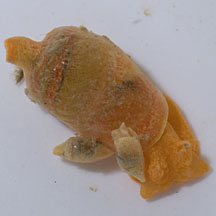
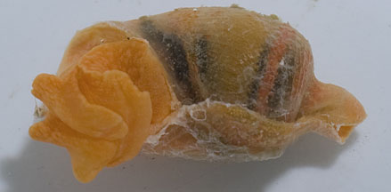
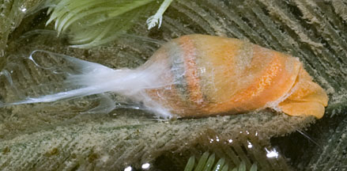
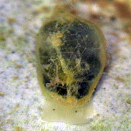

|
|
| sea slugs text index | photo index |
| Phylum Mollusca > Class Gastropoda > sea slugs > Order Sacoglossa |
| Volvatella
slugs Family Volvatellidae updated Jun 2020 Where seen? These tiny slugs with very fragile shells are sometimes seen among seaweeds on some of our shores. Features: Fragile, thin shell about 1cm long, that looks like a poorly folded cone that tapers into a spout at the end. The rhinophores are flattened, rounded and the animal has a pair of rounded oral lobes and a short foot. When disturbed, it secretes a white fluid. The egg mass is a flattened disk laid on seaweed. It is difficult to tell apart the species in the field, but in general, Volvatella vigourouxi (0.2-1cm long) is orange or yellowish, shell with fine darker orange-black spirals; Volvatella ventricosa (about 0.5cm long) is greenish; Volvatella maculata (about 0.5cm long) is white to pale yellowish with transparent spots. Another kind of Volvatella has a white shell with transparent spots and it has yet to be identified to species. |
 Smaller 'males' on top of a larger hermaphrodite snail. Sentosa, Jun 12 |
 Sentosa, Jun 12 |
| What do they eat? They have been seen on Caulerpa green
seaweeds (Caulerpa sp.) as well as other kinds of green seaweeds
including Hairy
green seaweeds (Bryopsis sp.). Baby volvatellas: Often one or more smaller slugs are seen 'riding' on top of a larger one. Those on the edge of the shell lip may be mating, with the smaller one inserting its penis into the larger one. According to Bill Rudman, although the slugs are hermaphrodites with both male and female reproductive parts, in smaller slugs, the male parts are developed while the female parts are not yet active. Both are developed in larger ones. Thus smaller slugs may be acting as males on larger slugs which act as females. |
|
 Produces a white fluid when disturbed. Pasir Ris, Aug 11 |
||
| Volvatella slugs on Singapore shores |
On wildsingapore
flickr
|
| Other sightings on Singapore shores |
 Terumbu Semakau, May 17 Photo shared by Toh Chay Hoon on facebook. |
| Family
Volvatellidae recorded for Singapore from Tan Siong Kiat and Henrietta P. M. Woo, 2010 Preliminary Checklist of The Molluscs of Singapore. ^K. R. Jensen. Sacoglossa (Mollusca: Gastropoda: Heterobranchia) from northern coasts of Singapore. *Cornelis (Kees) Swennen. Large Mangrove-dwelling Elysia species in Asia, with descriptions of two new species (Gastropoda: Opistobranchia: Sacoglossa) **from WORMS
|
Links
References
|